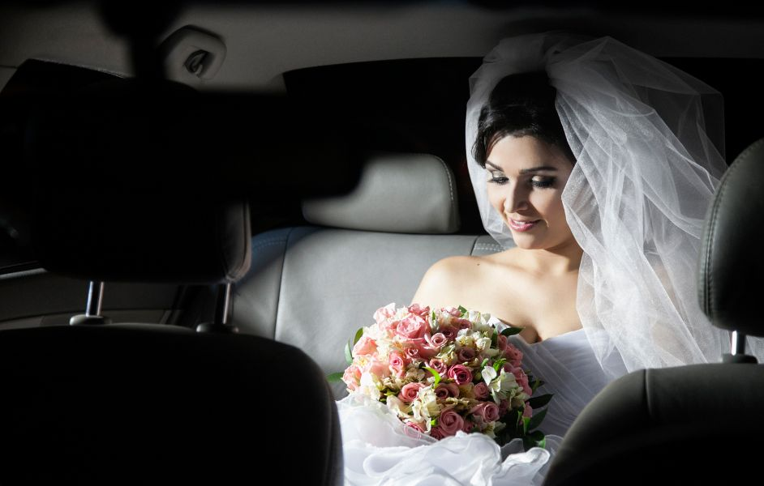

Timing & Coordination
Weddings are all about timing. We work around your schedule and keep everything simple: clear pick-up times, professional presentation, and a calm arrival — even when the day has many moving parts.
Need a quick photo stop? Want an extra buffer before the ceremony? Prefer a scenic route instead of traffic-heavy roads? We adapt the journey so it feels smooth and controlled — not stressful.
- On-time arrivals and clean coordination
- Optional photo stops (on request)
- Clear communication before and during the day
- Flexible routing when needed